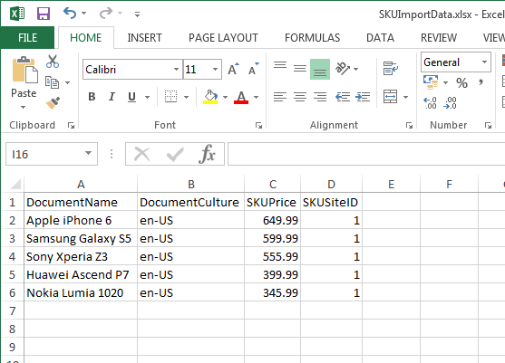
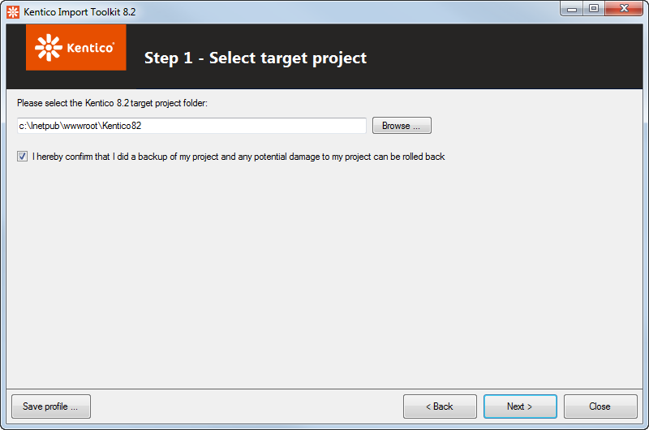
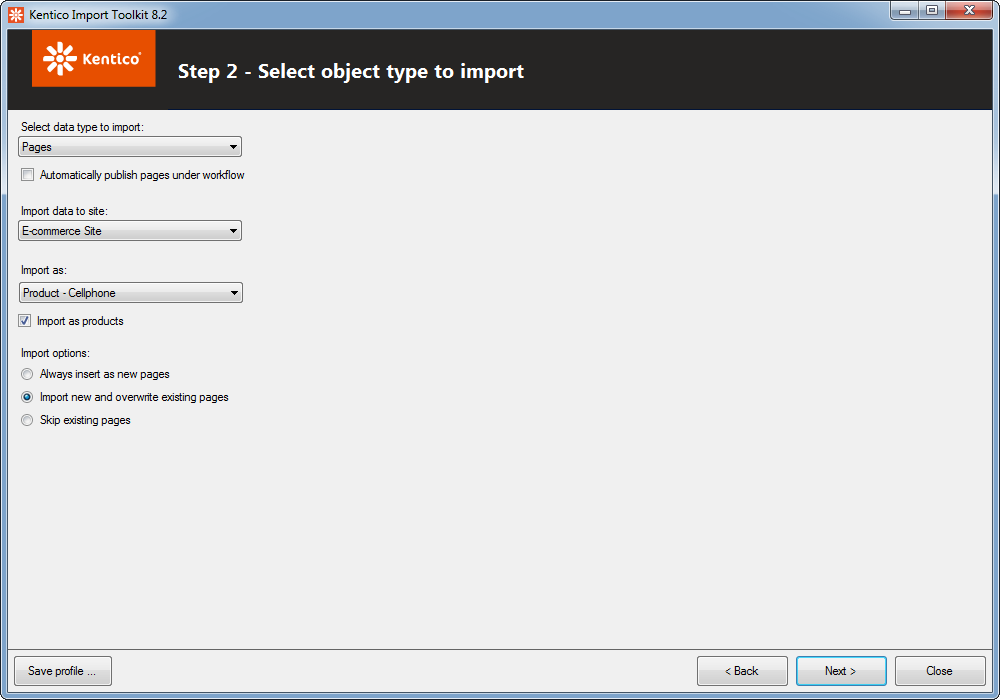
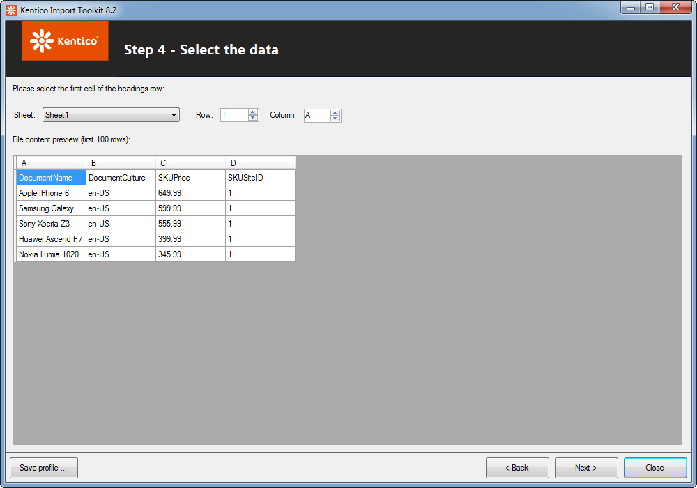
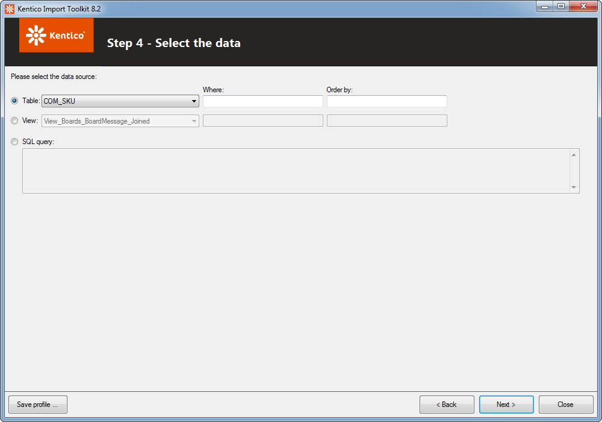
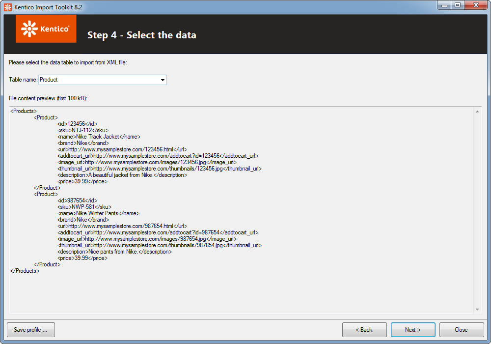
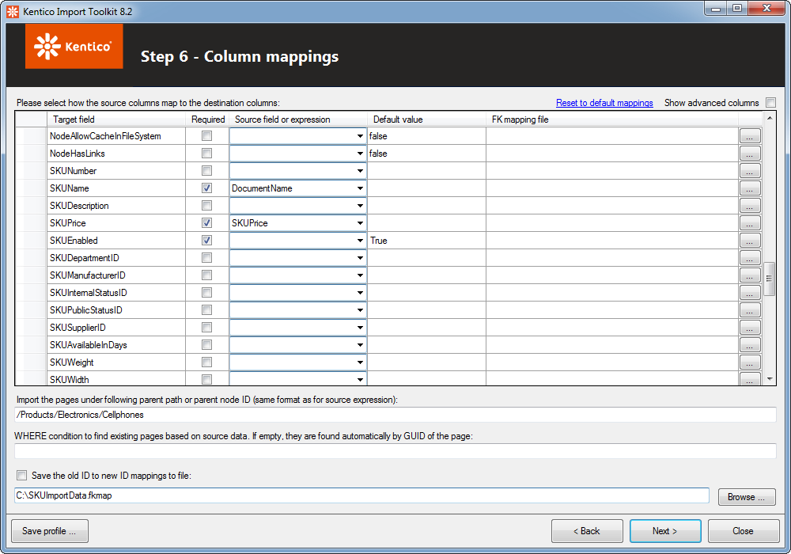
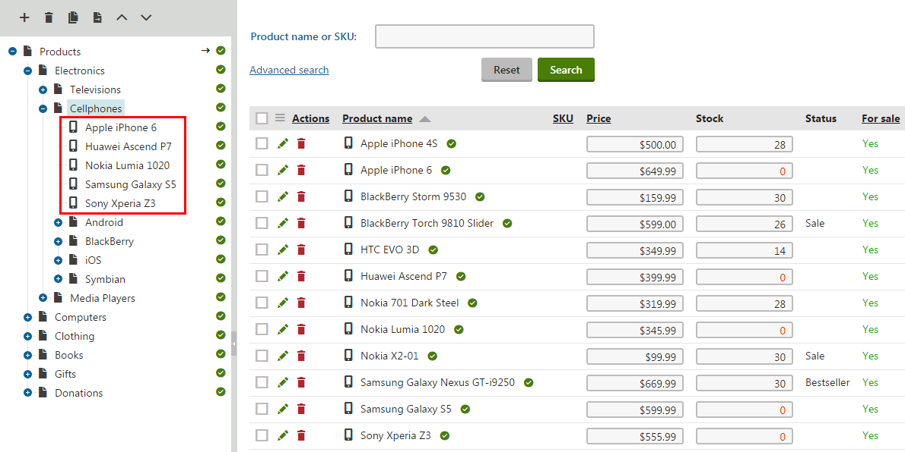

Importing products using Kentico Import Toolkit
Kentico Import Toolkit is a utility that allows you to import data from external sources into the system. As a source of data, you can use:
XML files
CSV files
XLSX and XLSM files (MS Excel)
MS SQL databases
With Kentico Import Toolkit, you are able to:
You can use this procedure to import products into any Kentico website from any of the listed sources of data.
Kentico Import Toolkit does not support importing (uploading) of product images.
Importing products from an external source of data
Taking preparatory steps
Prepare your external source of data, for example an XLSX file. Make sure that all required product properties are included.
Out of the box, the product properties required for import are:Name of the product – the same value for the DocumentName, SKUName and DocumentSKUName columns.
Culture of the product page – the DocumentCulture column.
Price of the product – the SKUPrice column.
ID of the site where the products are imported – the SKUSiteID column.
You do not need to set the SKUSiteID property; however, if you do not, the system assigns null to the property, which indicates global products.
Then, if you do not enable global products in the Store configuration application, you get an error when browsing the products (The error description is: "The object does not exist. It may have been deleted by someone else.")
If it already happened to your Kentico instance, there are several options to fix the products:
Enable global products. However, this may not be desirable, for example in multi-tenant instances.
-OR-Change the products' properties via Kentico Import Toolkit and set the SKUSiteID property.
-OR-Use a SQL script that will update the SKUSiteID property. If you choose this option, make sure you stop the site when you run the SQL script.
If you want to automatically assign products to their parent section (for example, to assign Mercedes-Benz S500 to the Cars section or Apple iPhone to the Cellphones section), add another column with their ParentNodeID property.
You can find the Node ID property while editing the desired parent page in the Pages application on the Properties -> General tab.
There can be also other required properties depending on the product type which products will use (you choose the page type later during the import).

External source of dataLaunch the Kentico Import Toolkit <version> in Start -> All programs -> Kentico <version> -> Utilities or execute the ImportToolkit.exe file located in <Kentico installation folder>\Bin (typically "C:\Program Files (x86)\Kentico\<version number>\Bin").
This opens the initial screen of the Kentico Import Toolkit wizard.
-
-
Importing products using Kentico Import Toolkit
-
Using the Kentico Import Toolkit wizard
In each (except for the initial) wizard step, you can click Save profile and save the configuration done until that point. The system saves the configuration as an .iprofile file in a destination of your choice. You can then load the saved configuration file in the initial step.
Start a new import session.
Alternatively, load an import profile that you created during a previous product import.
Step 1: Specify the root folder of the project into which you want to import the products.
Confirm that you did a backup of your project.
Step 2: Select the object type that the system will use to store the imported data.
Select data type to import – Select Pages. (If you want to import the products just as SKUs (without their corresponding product pages), select Objects.)
Import data to site – specify the site to which you want to import the products.
Import as – select the product type that the system will use to store the imported products.
Import as products – Yes (selected) – confirm that the data is imported as products.
Import options:
Always insert as new pages – imports all the data. The Toolkit does not check whether the product is already in the system and adds it always as a new product.
Import new and overwrite existing pages – imports all the data. If a product is already found in the system (according to the column which will be specified in the following steps), the data from the external source overwrites the product data in the system.
Skip existing pages – imports just products which are not found in the system. Products found in the system (according to the column which will be specified in the following steps) will not be imported.

Selecting the object type to importStep 3: Specify the source of the imported data. If you select a MS SQL database, enter your login credentials.
If you specify a source of data different from an XLSX/XLSM or CSV file, the Kentico Import Toolkit wizard displays the following step accordingly.
Step 4 – an XLSX/XLSM or CSV file:

Specify the row and column of the source file that the system will take as the beginning of the heading row of the imported data.
Selecting the data from an XLSX/XLSM or CSV file

Step 4 – a MS SQL database:
Specify a table, a view or a query that will be imported to the system.
Selecting the data from a MS SQL database

Step 4 – an XML file:
If the XML file contains more table names, select one of them.
Selecting the data from an XML fileStep 5: Preview the source of data.
Step 6: Check whether the automatically added source fields were correctly assigned to the target fields. You can also assign the source fields to other target fields.
Configure other important mappings:
Import the pages under following parent path or parent node ID – specifies where you want to place the imported products.
Enter the path (for example "/Products/Electronics/Cellphones") if all products have the same parent node.
Type the ={%ParentNodeID%} macro expression, where ParentNodeID stands for the column in which you keep the parent node IDs of the products. The system then automatically places the imported products under different parent pages as specified in your source fields.
WHERE condition to find existing pages based on source data – determines which of the existing products the system skips or overwrites.
Hidden if you configured the Kentico Import Toolkit to always insert the imported products as new pages (in the Import options field few steps before).
Leave the field blank if the products are recognized according to their page GUID.
Type a SQL macro expression to update products according to a specific column.
If values in the column are only numeric, type SKUNumber = {%SKUNumber%}, where SKUNumber stands for the database column and {%SKUNumber%} is the macro expression, which stands for the column in your source data (e.g., an XLSX file).
If values in the column are strings, type SKUNumber = '{%SKUNumber%}' (i.e. with inch symbols).
Save the old ID to new ID mappings to file – saves mappings of source identification fields to target identification fields into an .fkmap file. You can use this file when configuring field mappings during your later import sessions.

Configuring the fields mappingStep 7: Preview the target data.
Select whether you actually want to import the data or you want just simulate the import.
Click Import data to perform the import of the data from the source to your on-line store. The Kentico Import Toolkit informs you about the result of the import.
Close the wizard.
Alternatively, continue with one of the available scenarios (the Continue with section).
If you open the Products application, you will see the imported products in the specified section.

Imported products
See an example of importing new products to learn more information.
Changing product properties using an external source of data
You can use Kentico Import Toolkit also when you update your external source of data and you want to import changes to your Kentico.
You also need to include all unchanged values in the source data. Values in the database columns which are not mapped to columns in the source data are deleted.
Kentico Import Toolkit is therefore suitable for updating products which are also kept in a stand-alone source and not suitable for updating products when you have just some properties available.
Follow the same steps as when importing new products mentioned above with the following changes:
In the external source, you need to include a column with a property according to which the system recognizes the products, for example SKUNumber.
In Step 2 in the Import options field, you need to select Import new and overwrite existing pages.
In Step 6 in the WHERE condition field, type a SQL WHERE condition with a macro expression to find the products, for example SKUNumber = '{%SKUNumber%}', where SKUNumber means a database column and {%SKUNumber%} means a column in your source data.
After finishing, if you open the Products application, you will see the updated products.